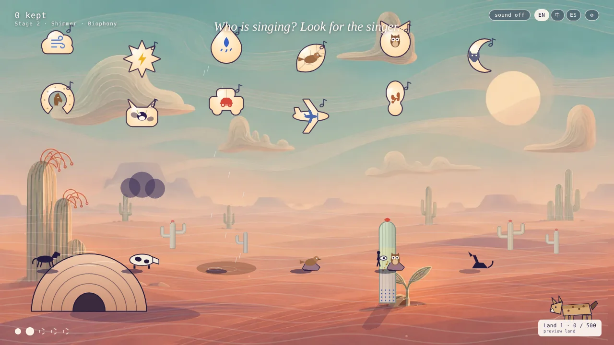
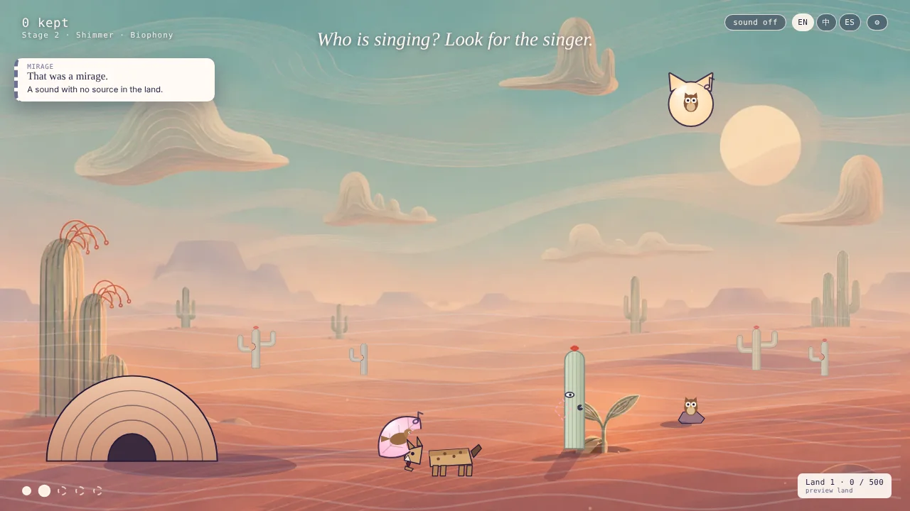

From demo to a place worth staying in.
Week 2 proved the loop. Week 3 made the world feel alive and gave every choice a consequence.

Shapes you can read
Weather and water are clouds, stars, drops and crystals. Animals and plants are leaves, owls, moons and cows. People and machines are cars, planes, trucks, feet and speech bubbles. A mirage can wear any shape, so shape tells you the family, never whether it is real.
A bobcat that bites mirages
Keep a mirage by mistake and the bubble sinks, the bobcat runs over and bites it, and it shatters. The bite also hurts one of the distant saguaros: a bite mark, then a broken top, then a dry, cracked trunk. They are never destroyed, but the desert remembers.


Four painted scenes
A dusty, stormy opening, a clear day, a late afternoon that shifts through three versions, and a dawn. They are AI-assisted paintings that reuse my Week 1 drawing, and they crossfade as the stages change. My saguaro takes the scene's shape and wears a pattern for every sound family you keep.
Too little water, then a flood
The opening plays a real-scene flood recording, because 2026 brought a flood to a drought. After years of dryness, southern Arizona logged a record 246 flash-flood warnings in a single monsoon, and the region is still in drought. Your first task is to find out which water is really there.


An ending with a flute
When the saguaro blooms, a flute plays. You plant it, the land changes, and you choose one of three artworks for a sound postcard to download or send.